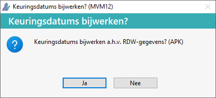
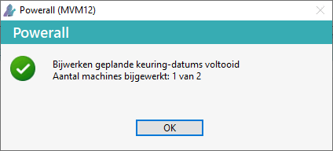
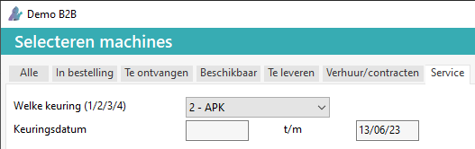

Powerall Connect is gekoppeld met het RDW. Hierdoor is het mogelijk om de APK datum bij te werken.
Om APK / Tachograaf datum bij te werken moet het volgende ingesteld zijn:
De keuringscode bij Onderhoud keuringscodes.
De keuringscode APK en of Tachograaf moet gekoppeld zijn aan keuring 1/ 2/3/4 zie Keuringen instellen.
Bij Tachograaf kan gebruik gemaakt worden van een RDC account.
Het kenteken bij de Machine.
Belangrijk: Module Keuringen is hiervoor nodig.
Om de datum(s) bij te werken, a.d.v.d RDW gegevens, doorloopt u de volgende stappen:
Ga naar Selecteren machines (MS)
Ga naar tabblad Service.
Alle machines met een keuring(s info) verschijnen op het scherm.
Kies voor de knop Keuringsdatums / Bijw. APK-datums,
Het scherm Keuringsdatums bijwerken? verschijnt.

Afhankelijk van de ingestelde RDW keuringen verschijnt de juiste tekst APK / Tachograaf.
Kies voor de knop OK.
Na het bijwerken verschijnt er een melding.
Controleer het aantal machines bijgewerkt.

Kies voor de knop OK.
Tip: De geplande tachograaf-datum wordt ook bijgewerkt, als deze keuring ingesteld is.
(Optioneel) :
Selecteer bij welke keuring APK.
Vul eventueel een Keuringsdatum van en t/m in.

Kies voor de knop Selecteer.
De machines die hieraan voldoen, verschijnen op het scherm.
Kies voor de knop Keuringsdatums / Bijw. APK-datums
Na het bijwerken verschijnt er een melding.
Controleer het aantal machines bijgewerkt.
Kies voor de knop OK.
De APK-datums zijn bijgewerkt.
FAQ
Tip: Dubbel-klik op een Machine regel om de APK datum te bekijken, op tabblad Service bij Opvragen machines.
Tip: Voor gegevens opvragen via kenteken ook zie RDW, druk op Vervaldatum en historie of RDWdata.nl (kentekencheck), Kenteken&documentcontrole
Opmerking: Bij APK wordt er gerekend met de RDW data, niet met actuele APK datum en het aantal dagen.
Bij Onderhoud machines (MBB) en Opvragen machines (MO) is het ook mogelijk om de APK datum bij te werken, op tabblad Service d.m.v. de refresh knop  .
.
Gerelateerde onderwerpen
Copyright ©